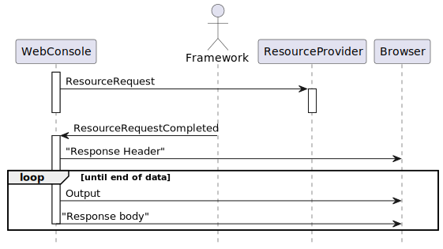

Class ResourceRequest
- java.lang.Object
-
- org.jgrapes.core.internal.EventBase<T>
-
- org.jgrapes.core.Event<ResourceResult>
-
- org.jgrapes.webconsole.base.events.ResourceRequest
-
- All Implemented Interfaces:
Future<ResourceResult>,Associator,Eligible
- Direct Known Subclasses:
ConletResourceRequest,PageResourceRequest
public class ResourceRequest extends Event<ResourceResult>
An event that signals the request for a resource by the browser.This event is effectively a “transformed”
Request.In.Get. It simplifies handling of such an event by web console components, because they can simply set a result of typeResourceResultand thus need no knowledge about generating all the events required to properly respond to aRequest.In.Get.The complete sequence of events is shown in the diagram.

Of course, due to internal buffering, the “Response Header” data and the “Response body” data may collapse in a single message that is sent to the browser (in case of a small resource).
If a value is provided by
ifModifiedSince(), and the resource has not changed since the given instant, a resource provider may setResourceNotModifiedas result. This information will be forwarded to the browser. For a result of typeResourceByUrl, the check for modification will be made automatically, using information derived from theURL.Handlers of
ResourceRequestevents use usually only the information provided byresourceUri(). The other items are needed by the handler of theResourceRequestCompletedevent (the web console) to generate the response for theRequest.In.Get.If none of the provided
ResourceResulttype matches the requirements of the resource provider, it can setResourceProvidedas result. This signals that it genertes the response itself.
-
-
Field Summary
-
Fields inherited from class org.jgrapes.core.internal.EventBase
completed, completionEvents
-
-
Constructor Summary
Constructors Constructor Description ResourceRequest(URI resourceUri, Instant ifModifiedSince, org.jdrupes.httpcodec.protocols.http.HttpRequest httpRequest, IOSubchannel httpChannel, Session session, RenderSupport renderSupport)Creates a new request, including the associatedResourceRequestCompletedevent.
-
Method Summary
All Methods Instance Methods Concrete Methods Modifier and Type Method Description IOSubchannelhttpChannel()org.jdrupes.httpcodec.protocols.http.HttpRequesthttpRequest()Returns the “raw” request as provided by the HTTP decoder.Optional<Instant>ifModifiedSince()If not null, this value may be used to decide if the resource must be refreshed.RenderSupportrenderSupport()Returns the render support.URIresourceUri()Sessionsession()Returns the (browser) session.-
Methods inherited from class org.jgrapes.core.Event
addCompletionEvent, associated, cancel, channels, channels, completionEvents, currentResults, defaultCriterion, forChannels, get, get, handled, handlingError, isCancelled, isDone, isEligibleFor, isStopped, processedBy, results, results, setAssociated, setChannels, setRequiresResult, setResult, stop, tieTo, toString
-
Methods inherited from class org.jgrapes.core.internal.EventBase
disableTracking, enqueued, firstResultAssigned, isTracked, onCompletion
-
Methods inherited from class java.lang.Object
clone, equals, finalize, getClass, hashCode, notify, notifyAll, wait, wait, wait
-
Methods inherited from interface org.jgrapes.core.Associator
associated, associated, associated
-
-
-
-
Constructor Detail
-
ResourceRequest
public ResourceRequest(URI resourceUri, Instant ifModifiedSince, org.jdrupes.httpcodec.protocols.http.HttpRequest httpRequest, IOSubchannel httpChannel, Session session, RenderSupport renderSupport)
Creates a new request, including the associatedResourceRequestCompletedevent.- Parameters:
resourceUri- the requested resourcehttpRequest- the original HTTP requesthttpChannel- the channel that the HTTP request was received onrenderSupport- the render support
-
-
Method Detail
-
resourceUri
public URI resourceUri()
- Returns:
- the resourceUri
-
ifModifiedSince
public Optional<Instant> ifModifiedSince()
If not null, this value may be used to decide if the resource must be refreshed.- Returns:
- the instant
-
httpRequest
public org.jdrupes.httpcodec.protocols.http.HttpRequest httpRequest()
Returns the “raw” request as provided by the HTTP decoder.- Returns:
- the request
-
httpChannel
public IOSubchannel httpChannel()
- Returns:
- the httpChannel
-
renderSupport
public RenderSupport renderSupport()
Returns the render support.- Returns:
- the render support
-
-